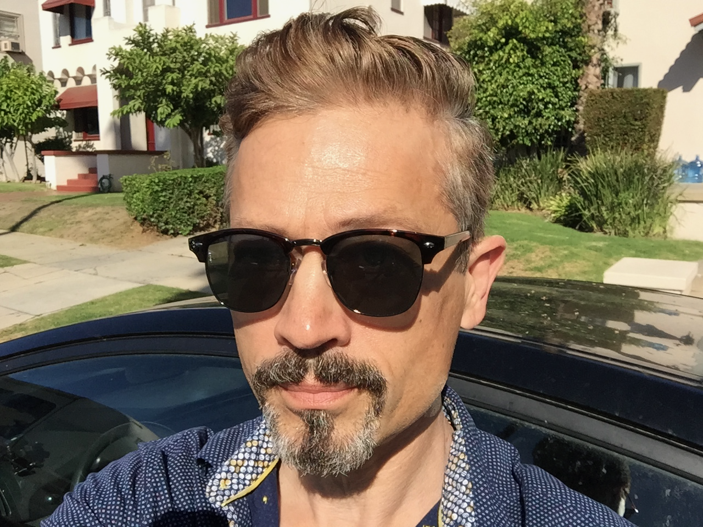

Jack Erdie's Resume
Objective
The final objective of my last seven years of self-inflicted study of behavioral economics,
social psychology, the attention economy and web development will be to build
more purposeful and fulfilling games and social networking apps. I also intend to apply
what I have learned, and am learning, to nudge users toward my video and podcasting
content, as well as to nudge them with that content toward more civil and aspirational
engagement.
Education
- Colt Steele's Web Development Boot Camp
- Zed A. Shaw's Learn Python The Hard Way
- Apple Pro Video Training: Final Cut Pro X
- Howard Fine's Foundations of Acting Intensive
- Flying Pig Theater 6 Week Comedy Improv Course
- West Virginia University - Humanities
Work Experience
-
Professional Freelance Actor
- Researched and performed roles in film and television projects
- Designed and maintained website for jackerdie.com
- Performed stage combat, stunts, and ADR adjustments
-
Podcaster Plague Talk
- Prepared questions and interviewed guests
- Audio recorded and edited episodes
- Produced and advertised all segments
- Designed logo and episode covers
- Uploaded content and maintained website
-
Video Editor
- Edited and mastered actor video demos
- Created Documentary Sizzle Reel
-
Web Designer
- Designed, uploaded and maintained fansite for Jackie's Legs
- Maintained site for theater group New Teeth Productions
-
Customer Service
- Specialty Pharmacy and Energy Choice Retailer
- Deescalated upset customers
- Assisted patients through many stages of their enrollment, adherence, insurance,
financial assistance processes
- Configured budget amounts
- Maintained privacy and security protocols
Skills
| Audio Recording |
Audio Adjustment |
Audio Editing |
| Podcast Production |
Interviewing |
Marketing |
| Actor |
Voiceover Artist |
Tele and Ear Prompt |
| Videography |
Video Lighting |
Final Cut Pro X |
| Screenwriting |
Playwriting |
Novel Writing |
| Bass guitar |
Acoustic guitar |
Banjo |
| Music composing |
Singing |
Studio Musician |
Awards
- Best Actor - We Love Your Shorts Film Festival
- Best Actor - Las Vegas Horror Fest
- Safety Champion - SoCal Gas Co for safety industrials
Contact Me
About Me